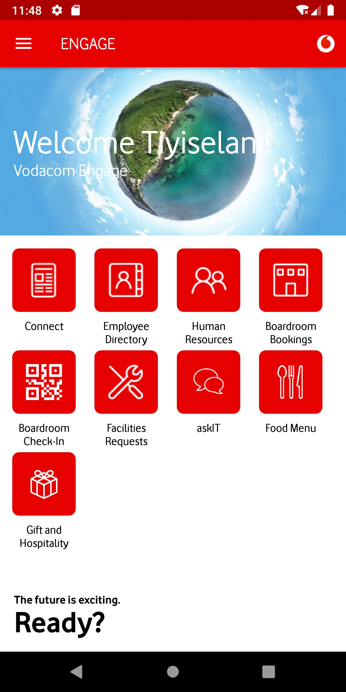
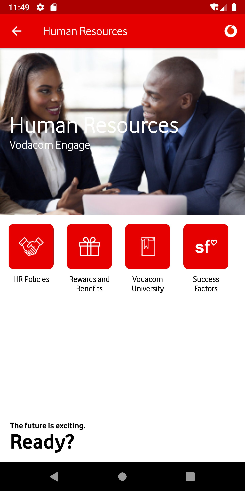
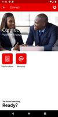
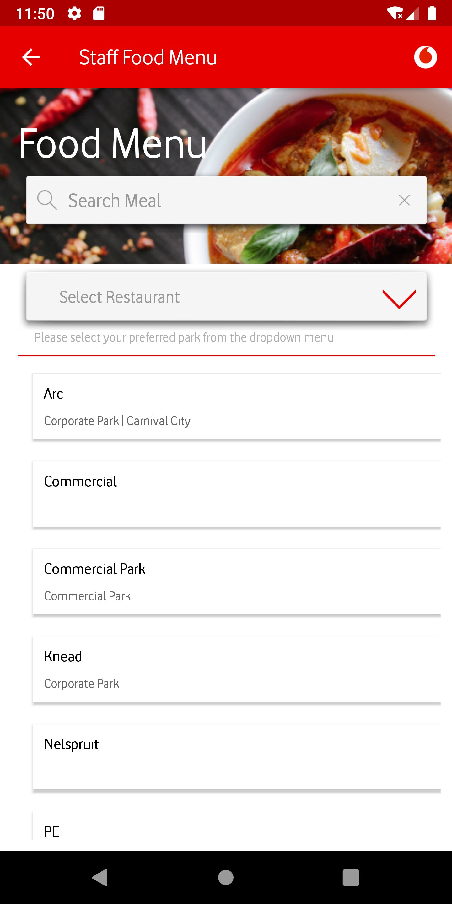
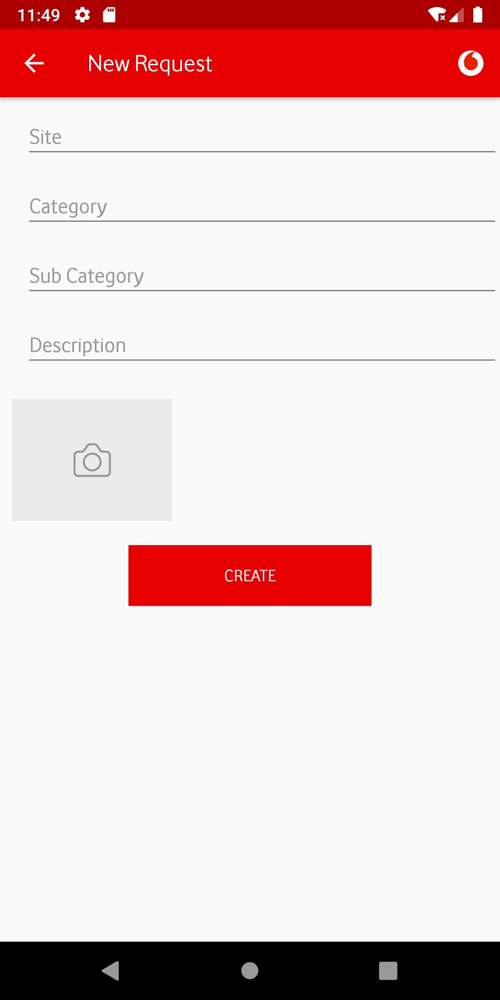
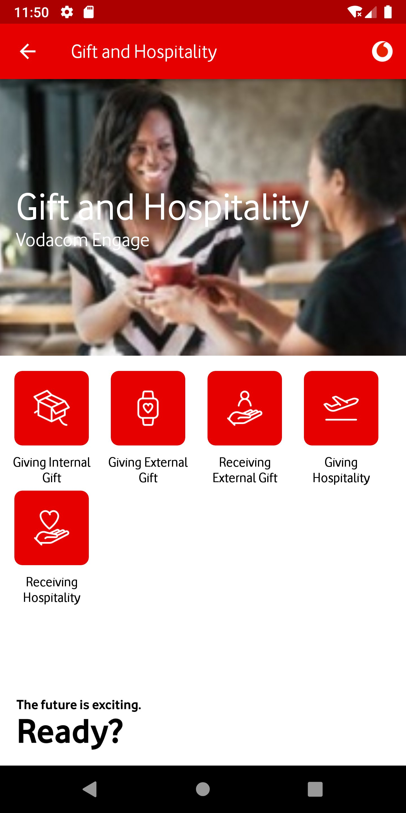
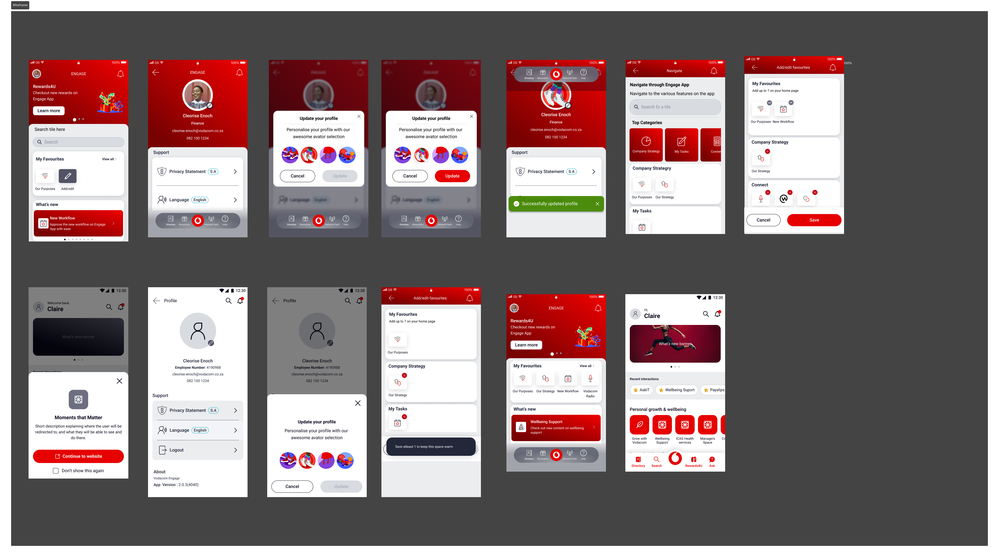
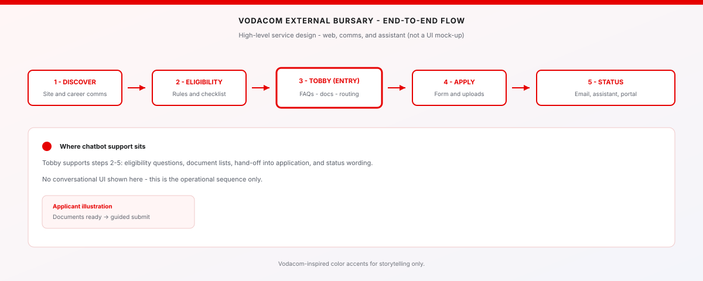

Vodacom
Engage
Redesigning a static icon-grid into a personalised, card-based employee experience — improving navigation, feature discovery, and daily engagement at scale.
The Engage app had been Vodacom's internal employee platform since 2019 — HR services, leave, IT helpdesk, food menus, boardroom bookings, Gift & Hospitality, and more. By 2021 it had grown feature-by-feature into a 9-tile icon grid with no hierarchy, no personalisation, and no way to surface what was relevant to you. The redesign brief was simple: employees should find what they need faster, and the app should feel like it knows who they are.
Vodacom
Design System
From Adobe XD library work through InVision DSM to Storybook — one threaded pipeline for tokens, components, and engineering reference.
Components and patterns were shaped in Adobe XD (layouts, variants, redlines), then documented and governed in InVision DSM so colour, type, and UI pieces had a single named source. Storybook anchored the living UI in code — states, props, and notes sat next to what developers shipped, which cut drift between design intent and production.
Tobby
Ask‑IT Chatbot
Designing a conversational assistant that answers common IT questions and knows when to hand off to humans.
Tobby turns high‑volume IT queries into short, guided conversations: password resets, VPN access, software requests, and more. I worked end to end on the UX — defining intent flows, message patterns, escalation rules, and UI states for web and mobile entry points.
Vodacom
External Bursary
Redesigning the bursary journey so applicants know where to start, what to submit, and when they will hear back.
I mapped the end‑to‑end bursary experience and redesigned it as a guided digital flow — from discovery and eligibility checks through document preparation, submission, and status updates. Tobby acts as a front‑door helper, answering questions and preparing applicants before they submit.
"The old app wasn't broken — it was invisible. Every feature was one tap from the home screen but two minutes of searching. The redesign wasn't about adding more; it was about making the right things appear at the right time for the right person. That required rethinking the information architecture, the visual hierarchy, and what 'personalisation' actually means inside an enterprise app."
Lulamile Mkhungela
Vodacom Group · 2021–2022
(01)
THE OLD
DESIGN
The original Engage app was built between 2019–2020 and followed a familiar enterprise mobile pattern: a branded header, a hero image section at the top of each module, and a grid of icon tiles below it. Every section — Home, Connect, Human Resources, Food Menu, Facilities Requests, Gift & Hospitality, Boardroom Check-In, AskIT — followed the same template.
Each section had its own red-header page with a large hero image and a 2×4 icon grid of sub-actions. Navigation was purely hierarchical — you had to know which top-level section held what you needed. There was no search, no shortcuts, no personalisation, and no way to surface what was relevant to your role or location. The app was honest about its own architecture, but employees weren't using it that way.

What it was
A branded welcome section with a hero image and 9 icon tiles below — Connect, Employee Directory, Human Resources, Boardroom Bookings, Boardroom Check-In, Facilities Requests, askIT, Food Menu, Gift & Hospitality. All tiles were equal weight. There was no hierarchy, no indication of what was most used or most relevant, and no quick access to anything outside these 9 categories.

The pattern repeated everywhere
Every module used the same structure: red header, hero image, 2×2 or 2×3 icon grid. HR showed — HR Policies, Rewards and Benefits, Vodacom University, Success Factors. The visual pattern made every section feel identical regardless of content type. Sub-features that were frequently used had no priority over rarely-accessed ones.




No context, no guidance
Gift & Hospitality offered 5 sub-actions — Giving Internal Gift, Giving External Gift, Receiving External Gift, Giving Hospitality, Receiving Hospitality. Each was an icon tile with a label. Nothing communicated policy, thresholds, or whether an action was required at all. First-time users had no way to know which option applied to their situation.
Bare-bones form UX
Forms across the app — Facilities Requests, Gift submissions, COVID screening — used plain text inputs with no visual grouping, no inline validation, no progress indication, and no confirmation state. Required fields weren't marked. Upload actions offered no guidance on file type or size. The form experience felt like a web portal transposed onto a phone.
(02)
PROBLEMS
IDENTIFIED
Through employee interviews, support ticket analysis, and direct observation, I catalogued the recurring pain points that motivated the redesign:
-
01
No feature hierarchy All 9 home tiles were rendered at equal visual weight. Employees who checked their leave balance daily had the same experience as someone accessing Boardroom Bookings once a month. The app treated all features as equally important to all people at all times.
-
02
No personalisation layer The app showed the same home screen to a call centre agent in Johannesburg and a network engineer in Cape Town. There was no role-based filtering, no location-aware content, and no way to save frequently-used actions. Employees resorted to remembering navigation paths rather than using the app intuitively.
-
03
No search If you didn't know which of the 9 categories your question lived in, you had to explore each one. This was the primary driver of IT helpdesk tickets — employees raising tickets for things the app could resolve, if only they could find them.
-
04
Repetitive visual template Every module used the same red-header + hero image + icon grid pattern, regardless of content type. HR Policies, Food Menus, and Boardroom Bookings all looked identical. The pattern prevented the app from communicating which sections were content-heavy vs action-driven vs time-sensitive.
-
05
Form UX gaps Forms had no progress indicators, no inline validation, no field-level guidance, and no confirmation states. The Facilities Request and Gift & Hospitality flows were particularly error-prone, generating a disproportionate share of support contacts from users who were unsure if their submission had been received.
-
06
No contextual content Announcements, news, Wellbeing initiatives, and Rewards campaigns had no dedicated home on the home screen. They were buried inside individual modules. An employee would have to navigate into Human Resources to find a policy update, or into Connect to see a company announcement — even when those items were time-sensitive.
(01)
DESIGN
DECISIONS
The redesign wasn't a visual refresh — it was an architectural rethink. Every change was grounded in a specific problem identified during discovery. Below is the decision log: what changed, why, and what principle guided the decision.
| Area | Old | New | Type |
|---|---|---|---|
| Home screen structure | 9 equal-weight icon tiles, static for all users No hierarchy, no context, no user signal | Card-based sections: Rewards4U banner, My Favourites, Company Strategy, Wellbeing Hub, Recent Interactions. Each card type has its own visual language and load priority. | Navigation |
| Personalisation | Identical experience for all employees No role, location, or behaviour awareness | Personalised greeting ("Hi Claire"), avatar with customisation, My Favourites (user-defined shortcuts), Recent Interactions (behaviour-driven surface), role-tagged profile with department and employee number. | Feature |
| Navigation model | Top-level tab + icon grid per module User must know where to look | Bottom navigation bar (Home, Directory, Search, Rewards4U, Help) + contextual deep-links from cards. Search surfaces features by keyword — no need to know which section they live in. | Navigation |
| Search | No search | Global search across all features, policies, and employee directory. Dedicated Search tab in bottom nav. Eliminates the primary source of IT support tickets — employees unable to find features. | Feature |
| Visual design system | White background, solid red header bar, white icon tiles with red fills, Vodafone Red as dominant UI colour Brand-heavy but not content-friendly | Dark charcoal surface (#1C1C1E) with tonal red accents, card-based layout with subtle shadows, content photography integrated into cards rather than isolated hero images. Brand is present but no longer dominant over content. | Visual |
| Typography hierarchy | Section title + icon label only. No body copy, no description, no context. | 3-level hierarchy: section header, card title, supporting body. Cards carry enough information to act on without tapping in — e.g. "Wellbeing Hub: All the support you need to be your best self" is readable on the home screen. | Visual |
| Content surfacing | Announcements, wellbeing content, and rewards buried inside modules | Home screen surfaces timely content via Rewards4U banner (Rewards4U new offers), Wellbeing Hub card (contextual health content), and a What's New section. Time-sensitive content no longer requires navigation. | Navigation |
| Profile & settings | No user profile, no settings panel, language buried in app settings | Profile panel shows name, title, department, employee number, language preference, Privacy Statement link, Total Reward Statements access. Avatar customisation with predefined illustrated options. Single-tap language change. | Feature |
| Favourites | No favourites or shortcut mechanism | My Favourites — a user-curated section on the home screen. Users add their most-used features once; they appear as quick-access tiles above the main content area. Persistent across sessions. | Feature |
| Form patterns | Plain text fields, no validation, no progress, no confirmation states | Grouped form fields, inline validation, step progress bar, document checklist shown upfront (not at upload step), animated confirmation toast. COVID pre-screening redesigned as a multi-step guided form with conditional branching. | UX Pattern |
| COVID screening (new feature) | Not present in original app | Mandatory Pre-Screening flow added: multi-step form with health conditions checklist, work location dropdown, transport mode, consent checkboxes. Designed with conditional branching for health flags. Full mobile-first responsive layout. | Feature |

(02)
RATIONALE
The decisions above were governed by four design principles that emerged from the research phase:
-
01
Surface before search Employees shouldn't have to know the app's architecture to find what they need. The home screen redesign was guided by a single question: "What does this person most likely need right now?" — answered by role, behaviour, time of day, and recent activity. Cards that don't require navigation at all are better than navigation that's one tap faster.
-
02
Personalisation earns trust An app that knows your name and shows your recent payslip date feels like a tool. An app that shows the same home screen to everyone feels like a noticeboard. The personalisation layer wasn't cosmetic — it was the difference between employees checking the app first vs calling IT first.
-
03
Brand serves content, not the other way around The old design made Vodafone Red the hero on every screen. The redesign inverted this — brand colour is used as an accent to guide attention, not as a background that competes with content. Dark surface cards let photography and type do the communicating, with brand expressed through the Vodafone swoosh and key CTAs.
-
04
Forms are conversations, not data entry Every form in the old app felt like a database schema transposed onto a phone. The redesign treated forms as guided conversations: one decision at a time, context shown upfront, progress made visible, and completion celebrated. The COVID screening flow was the clearest expression of this — a complex conditional form made to feel like a 3-minute check-in.
(01)
THE NEW
DESIGN
The redesigned Engage app moved from a static icon-grid to a contextual, card-based experience with a personalised home screen, global search, bottom navigation, and an expanded feature set built around real employee workflows.
The new home screen leads with a personalised greeting and the user's profile context, followed by a Rewards4U promotional banner, My Favourites (user-curated shortcuts), a Company Strategy section with Our Purpose and Our Strategy, and a Wellbeing Hub card. The overall visual language shifted from red-dominant to dark charcoal with red accents — a change that reduced visual fatigue on daily-use screens while keeping the Vodacom brand present and recognisable.


(02)
KEY
SCREENS
The new design introduced 6 core screen types, each designed for a specific employee need:
-
01
Personalised Home Greeting with user's name and role, Rewards4U notification badge, search shortcut, and a contextual card stack. The home screen is the only screen an employee needs to visit to understand what's new, what's relevant, and what they've been doing recently.
-
02
My Favourites A user-managed section at the top of the home content area. Employees add their own frequently-used features — Our Purpose, New Workflow, Vodacom Note — without any admin intervention. On first use, an empty state offers guided suggestions. Configured once, persisted across sessions.
-
03
Profile Panel A slide-in profile sheet showing full employee context: name, title, department, employee number, email. Quick-access links to Privacy Statement and Total Reward Statements. Language switcher at a single tap. Logout at the bottom. Avatar customisation with a dedicated update flow.
-
04
Avatar Customisation A new onboarding moment: employees can personalise their app identity with an illustrated avatar selector. The flow uses a two-step pattern — cancel/update confirmation — so changes feel deliberate. Avatar appears in the profile panel and as the home screen greeting avatar.
-
05
Navigate Engage Overlay A full-screen navigation overlay accessible from the home screen that organises all features into top-level categories: Company Strategy (My Tasks, Our Strategy), Connect (sub-features). This replaces the old 9-tile home grid for deep-navigation use cases while keeping the home screen clean for frequent tasks.
-
06
Rewards4U Banner & Tab A dedicated tab in the bottom navigation for Rewards4U — Vodacom's employee rewards and recognition platform. A home screen banner shows current promotions with a "Learn more" CTA. Rewards are now a first-class feature rather than a tile buried inside Human Resources.
(03)
PROCESS
The redesign followed a research-first, test-early approach across three phases over approximately 4 months:
-
01
Discovery — support tickets + employee interviews Started with 3 months of IT helpdesk tickets. Identified the top query categories and mapped them against the current navigation to find where the app was failing. Spoke to 6 employees across engineering, HR, finance, and campus operations. Built an emotional journey map from "opens app" to "gives up and calls IT."
-
02
IA redesign — card sorting + tree testing Ran a card sort with 12 employees to understand their mental model of feature groupings. The results challenged several assumptions about what "belonged together." Used findings to redesign the information architecture: 6 top-level categories replacing the flat 9-tile grid, with a new search layer as a navigation fallback.
-
03
Visual direction — dark theme exploration Tested two directions in parallel: a refreshed version of the existing white/red design, and a dark charcoal direction. The dark theme tested significantly better for daily use — employees felt it was easier on the eyes during extended use and felt more modern and intentional. The dark direction was selected and developed through hi-fi.
-
04
Wireframing — mid-fi through hi-fi in Figma Built wireframes for 14 screens, progressing from lo-fi structure through mid-fi component validation to hi-fi with the Vodacom brand applied. Used auto-layout components throughout to make the hand-off a single Figma file rather than a collection of static artboards.
-
05
Prototype testing — 2 rounds, 10 sessions Round 1 with 5 employees: tested navigation to 4 features and the profile customisation flow. Round 2 with 5 employees: tested the COVID screening flow and the Favourites management flow. Net findings: search was the most-valued addition, and avatar customisation drove the highest positive sentiment response.
-
06
Design system contribution All new component patterns contributed back to the shared Vodacom design library: dark card variants, bottom navigation component, profile panel shell, avatar picker component, Rewards4U banner, and the COVID form pattern (multi-step with conditional branching).
(01)
DELIVERABLES
- IA redesign — card sort with 12 employees, tree-test validation, new 6-category structure replacing 9-tile flat grid
- 14 hi-fi screens — Home, Profile Panel, Avatar Customisation (2 states), My Favourites, Navigate Overlay, HR module, Connect module, Food Menu, Facilities Request, Gift & Hospitality, COVID Pre-Screening (4-step flow), Search, Rewards4U
- Clickable Figma prototype — 5 core flows tested across 2 rounds, 10 sessions
- COVID Pre-Screening flow — full conditional form with health conditions, work location, transport, and consent — designed as a guided multi-step conversation
- Design system contributions — dark card variants, bottom nav component, profile panel shell, avatar picker, Rewards4U banner, COVID form pattern
- Usability test report (2 rounds) — 10 sessions, key findings and scope changes documented before handoff
- Annotated dev handoff — all screens with spacing, colour tokens, interaction specs, and component references
(02)
OUTCOMES
The redesigned Engage launched in 2022. The IT support team reported a meaningful reduction in navigation-related tickets — the primary pain point the redesign was built to address. Employee feedback gathered post-launch highlighted search and personalisation as the most-valued additions.
(03)
LESSONS
Three things I'd carry into any enterprise mobile redesign:
-
01
Support tickets are better research than surveys The IT helpdesk data told me exactly where the app was failing — not what employees said they wanted, but what they actually couldn't do. Starting with 3 months of tickets gave the redesign a concrete, defensible priority list that stakeholders couldn't argue with.
-
02
Personalisation needs a behaviour signal, not a settings screen The My Favourites feature worked because employees curated it themselves — it didn't require an admin to configure roles and permissions. When personalisation requires user action to activate, it tends to be used by the people who need it most and ignored by everyone else. That's fine. The goal was relevance, not uniformity.
-
03
Dark themes need a strong rationale, not just an aesthetic preference The dark direction was chosen because it tested better for daily use — less visual fatigue, higher perceived modernity. But it also created new constraints: photography needed to work against dark surfaces, the Vodacom red needed careful handling to avoid vibrating against dark backgrounds, and text contrast had to be re-validated at every tier. The decision was worth it, but it required deliberate follow-through.
(01)
OVERVIEW
Vodacom Design System
Work was anchored in Adobe XD: libraries for patterns coming out of Engage and other internal products, with layouts and specs that could be traced into delivery. Documentation and governance sat in InVision DSM — tokens, component names, usage notes, and what devs should pull when they extended the system.
On the engineering side, Storybook held the runnable source of truth: variants and states in code, with space for notes that matched what DSM promised. My role was to keep those three layers speaking the same language — so a change in XD/DSM didn't get lost before it hit Storybook.
(02)
PROCESS
-
01
Audit of existing products I started with an interface inventory across internal tools: buttons, inputs, navigation bars, cards, overlays, form patterns, and typography scales. I tagged duplicates, inconsistencies, and one-off patterns that could be refactored into a common model.
-
02
Token and component definition From the audit, I defined a token set (colour, radius, elevation, spacing, typography) and a first wave of components in XD, then mirrored structure in InVision DSM and aligned props with Storybook stories: buttons, inputs, fields, cards, navigation bars, list items, and banners — each with states, responsive behaviour, and usage guidelines.
-
03
Systemising product patterns Patterns from multiple internal products — card layouts, navigation, avatar pickers, multi-step forms — were abstracted into generic, brand-ready components. Instead of keeping them inside individual files, I contributed them into the shared Vodacom library.
-
04
Governance and contribution model I worked with another designer to define contribution rules: when to extend the system vs. when to create a product-specific pattern, how to name components and variants, and how to request changes. This reduced the number of ad‑hoc components being created in product files.
(03)
OUTCOMES
- Faster product delivery — common patterns for navigation, cards, and forms meant new flows started from existing components rather than bespoke layouts.
- Higher visual consistency — typography, spacing, and colour rules were enforced via shared tokens, which reduced regressions when new screens were added by different designers.
- Clear hand‑off for engineering — DSM entries and Storybook stories lined up so usage notes, states, and XD redlines mapped into a single reusable UI layer in code.
(01)
OVERVIEW
Tobby — Ask‑IT Chatbot
Tobby was Vodacom's internal IT chatbot, designed to replace long email threads and support calls with a conversational channel for simple, high‑volume requests. My work focused on the UX for the web and mobile experience: clarifying Tobby's personality, designing conversation flows, and ensuring employees always knew what Tobby could and couldn't do.
The challenge was to balance automation with trust: automate password resets and FAQs, but hand off seamlessly to humans when queries became complex, all while keeping the experience aligned with Vodacom's brand.
(02)
PROCESS
-
01
Understanding top query types I worked with IT support to pull the most common ticket categories: password resets, VPN issues, software access, and general "how do I…?" questions. These became the backbone of the initial intent set.
-
02
Conversation flow design For each intent, I mapped the "happy path" and edge cases: missing information, wrong employee details, or unsupported requests. Flows were translated into simple, guided steps with clear confirmations and fallbacks.
-
03
Personality and tone I defined Tobby's voice as helpful and straightforward, using short, actionable messages rather than playful or overly chatty responses. Every message was written to make the next action obvious.
-
04
Escalation and hand‑off For queries that the bot couldn't resolve, I designed a clear hand‑off pattern: summarise the conversation, capture any missing details, and create a ticket for a human agent — so employees never felt they were "stuck in the bot".
(03)
OUTCOMES
No pixel-perfect chat UI in this case study — outcomes below reflect the process work (intents, flows, escalation) rather than illustrative renders.
- Reduced basic IT tickets — high‑volume tasks like password resets and simple access requests were handled by Tobby without needing a human agent.
- Clearer expectations — employees understood what Tobby could do from the first interaction, which reduced frustration and helped build trust in the tool.
- Reusable flows — the conversation patterns for guidance, confirmations, and escalation became templates for other internal chatbots and forms.
(01)
OVERVIEW
Vodacom External Bursary
The Vodacom External Bursary programme supports students with tuition and allowances. My work focused on improving the end‑to‑end experience: discovering the bursary, understanding eligibility, applying with the right documents, and receiving updates without needing to chase HR.
A key part of the solution was using Tobby as a guided entry point: instead of a static PDF, students and employees could ask questions, check eligibility, and start their application with a conversational assistant that knew the process step‑by‑step.

(02)
PROCESS
-
01
Journey mapping across channels I mapped how applicants currently discovered and applied for the bursary: website, email, HR referrals, and paper forms. Pain‑points included unclear timelines, missing documents, and no visibility after submission.
-
02
Designing a guided application flow I re‑framed the application as a guided journey with three stages: eligibility check, document preparation, and submission. Each stage surfaced clear instructions, checklists, and time expectations.
-
03
Integrating Tobby as a helper Tobby could answer questions like "Do I qualify?", "What documents do I need?" and "What is my application status?". I designed the flows so that Tobby captured structured information and then handed applicants into the formal form only once they were ready, with the right documents in hand.
-
04
Status and communication patterns Instead of silent waiting, applicants received clear status messages: application received, under review, missing information, accepted, or unsuccessful. These were surfaced via email and, where appropriate, via Tobby.
(03)
OUTCOMES
The journey diagram in the overview uses Vodacom red for emphasis only (same treatment as internal slide decks) — it is not a screenshot of production UI.
- Fewer incomplete applications — by turning the checklist into a guided flow (with Tobby as a helper), more applicants submitted complete applications on the first attempt.
- Higher transparency — clear statuses and notifications reduced the number of "just checking in" emails to the bursary team.
- Reusable scholarship pattern — the bursary journey (discovery, eligibility, guided completion, and status updates) became a pattern that could be reused for future programmes.